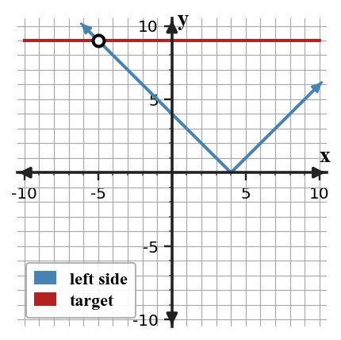
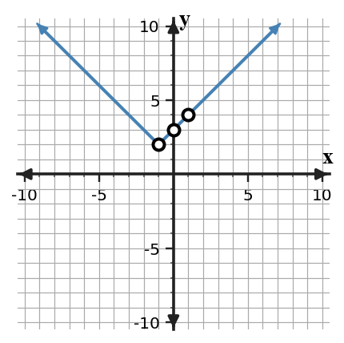

Absolute Value Functions and Piecewise Thinking
Mathematical idea: Absolute value measures distance from a target, so equal distances can come from two directions.
Today you will interpret absolute value equations, solve them by splitting into two cases, and check tables against rules. You will also connect vertices and intervals to real situations.
Learning Target
Learning Target: Students will analyze and model situations involving absolute value functions.
I can statements
- I can design an absolute value or piecewise representation for situations with distance, change in direction, or two-part behavior.
- I can apply key features of absolute value graphs to interpret vertex, intercepts, and rate of change.
- I can predict outputs and intervals from absolute value and piecewise rules in context.
What's To Come
This is a long-range preview for future lessons. Do not solve it today. Instead, annotate it individually. Circle anything familiar, underline symbols or directions that seem important, and write notes about what information you think will be needed later.
As you annotate, ask yourself: What parts (words, symbols, graphs) do you KNOW? What parts look FAMILIAR? What parts look like jibberish?
Create an absolute value model for a delivery driver whose distance from a warehouse decreases to $0$ after $4$ hours and then increases at the same rate. Include equation, domain, and interpretation of the vertex.
Intro
Directions
Read the introduction aloud with a partner or in a small group. As you read, annotate the text by highlighting important ideas, circling key vocabulary, and writing short notes about connections, questions, or predictions in the margins.
Absolute value is often connected to distance. It measures how far a number is from zero or from a target value, so the result is never negative. That distance idea is the reason absolute value appears in graphs and contexts.
An equation like $|x-4|=9$ asks for inputs that are 9 units away from 4. One input can be 9 units to the left and another can be 9 units to the right. That is why many absolute value equations split into two linear equations.
The graph of an absolute value function has a point where the direction changes. In a real situation, that point might represent the smallest distance from a target or the time when a person turns around. Reading the graph without that point can hide the meaning of the model.
Tables can show symmetry around the vertex. Inputs the same distance from the vertex have matching outputs when the graph is a basic absolute value transformation.
Piecewise thinking helps when a situation has different rules on different intervals. An absolute value graph can often be described as two linear pieces joined at a vertex.
Stop and Discuss
- What does absolute value measure?
- Why can an absolute value equation have two solutions?
- Why does the vertex matter in an absolute value model?
Absolute value gives the distance from a target, so two inputs can have the same output.
$$y=2|x-3|+1$$| $x$ | $1$ | $2$ | $3$ | $4$ | $5$ |
|---|---|---|---|---|---|
| $y$ | $5$ | $3$ | $1$ | $3$ | $5$ |

Context: The vertex $(3,1)$ means the output is smallest when the input is 3.
Example 1: List numbers with a given absolute value
Maya is thinking of a number. When she takes the absolute value of the number, the result is $12$.
- List all possible numbers Maya could be thinking of.
- Explain why there are two possible numbers.
- Describe the distance meaning of your answer.
You Try It 1: List possible values
Jordan is thinking of a number. The absolute value of the number is $7$.
- List all possible numbers.
- Explain why there are two possible numbers.
- Describe the distance meaning of your answer.
Stop and Discuss
- How does distance explain the two possible values?
To solve an absolute value equation, set the inside equal to the positive target and the negative target.
$$|x-4|=9$$ $$x-4=9$$ $$x-4=-9$$Solutions: $x=13$ or $x=-5$.

Context: Both solutions are 9 units from the target value 4.
Example 2: Solve an absolute value equation
Solve the equation $|x-4|=9$.
- Write the two linear equations represented by the absolute value equation.
- Solve both equations.
- Check both solutions in the original equation.
You Try It 2: Solve a two-case equation
Solve $|2x-3|=11$.
- Write the two equations represented by the absolute value equation.
- Solve both equations.
- Check both solutions in the original equation.
Stop and Discuss
- Why is it important to check both solutions?
Example 3: Solve and check both cases
Solve $|3x+2|=14$ and check your solutions.
- Write the two equations to solve.
- Solve each equation.
- Substitute both answers back into the original equation.
You Try It 3: Solve with a different inside expression
Solve $|5-x|=8$ and check your solutions.
- Write the two equations to solve.
- Solve each equation.
- Substitute both answers back into the original equation.
Stop and Discuss
- What does splitting into two cases do to the absolute value symbol?
When a rule and table are supposed to match, substitute each input and compare the output.
$$y=|x+1|+2$$ $$y(1)=|1+1|+2=4$$| $x$ | $-1$ | $0$ | $1$ |
|---|---|---|---|
| Correct $y$ | $2$ | $3$ | $4$ |

Context: A mismatch tells us whether the table, graph, or equation needs revision.
Example 4: Find and fix a table mismatch
The equation $y=|x+1|+2$ and the table are supposed to match.
| $x$ | $-2$ | $-1$ | $0$ | $1$ |
|---|---|---|---|---|
| $y$ | $3$ | $2$ | $3$ | $5$ |
- Evaluate the rule for each input.
- Find the first mismatch in the table.
- Revise the incorrect table value and explain your check.
You Try It 4: Revise a mismatched table
The equation $y=|x-2|+1$ and the table are supposed to match.
| $x$ | $0$ | $1$ | $2$ | $3$ |
|---|---|---|---|---|
| $y$ | $3$ | $2$ | $1$ | $3$ |
- Evaluate the rule for each input.
- Find the first mismatch in the table.
- Revise the incorrect value and explain your check.
Stop and Discuss
- How did you find the first mismatch instead of just guessing?
Summary
In this section, you practiced absolute value and piecewise thinking by using evidence instead of guessing.
Strong work connects at least two representations, such as a table and equation, a graph and context, or a feature and a model family.
The most common error is trusting a surface clue without checking the mathematical pattern or feature.
Strong understanding means you can explain why a model, transformation, solution, or strategy fits the situation.
Common Mistakes
- Only one solution. Why it is tempting: the positive answer is easiest to see. What to check instead: remember distance can go left or right.
- Forgetting to split cases. Why it is tempting: absolute value hides two possibilities. What to check instead: write the positive and negative equations.
- Not checking answers. Why it is tempting: both case solutions look valid. What to check instead: substitute into the original equation.
- Misreading the vertex. Why it is tempting: any point on the V may stand out. What to check instead: identify the turning point and minimum output.
- Missing interval meaning. Why it is tempting: piecewise rules look like separate problems. What to check instead: connect each rule to its domain.
Optional Future Task Reflection
Look back at the future task. Do not solve it yet. Highlight one part that makes more sense now than it did at the beginning. Circle one part that still feels unfamiliar. Write one sentence about what representation you would look at first.
Mr. Guo is thinking of a number. When he takes the absolute value of his number, he gets $15$. List all possible numbers and explain why there are two.
Solve $|9+3x|=39$ by writing and solving two linear equations.
What is one idea about absolute value and piecewise thinking you understand better now than at the start of class? Write at least one complete sentence.
What is one thing about absolute value and piecewise thinking you still want to understand or practice? Be specific — name the idea, not just "everything."